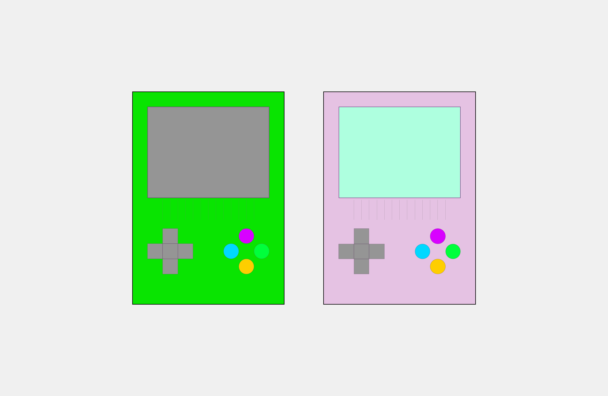

Grundlæggende web
01
Grundlæggende web
Fokus på grundlæggende webdesign. Proces samt skabe et responsivt site
Stilart: Retro videogame style
Jeg har i dette tema beskæftiget mig med grundlæggende principper inden for design og programmering, med særligt fokus på opbygningen og struktureringen af brugergrænsefladen. Jeg har designet og programmeret løsninger med anvendelse af udvalgte udviklingsmetoder, herunder grid-baseret layout.
I dette forløb stiftede jeg mine første, rigtige kendskaber med html og css. Jeg lærte at opsætte grid i html og css, samt designe layoutet. Herudover var der fokus på at lære ens mappestruktur, samt om ophavsret iforbindelse med at finde billeder til ens site. I Adbobe xd udadbejdede jeg et HI-FI wireframe med mockups, for at have et layout at gå udfra når jeg skulle til at kode. Her lærte jeg at et wireframe er super vigtigt og hjælpsomt hvis man står og skal kode/designe et site. I temaet 01 Grundlæggende web har vi lært om forskellige stilarter. Jeg skulle uddybe mig i stilarten Video Game style, hvor fokus var retro-design. I grupperne designede vi individuelt hver vores hjemmeside hvor indholdet var valgfrit, dog skulle temaet være gældende og præsenteret i layoutet. Jeg valgte at udarbejde en hjemmeside der tilhørte en spillecafe. Her skulle alle tænkelige former for arcade spil være tilgængelige. Jeg eksperimenterede med to forskellige udtryk inden for min givne stilart. Jeg lavede først et moodboard der tog udgangspunkt i et meget farverigt retro-univers, med kraftige pastelfarver og neon. Det andet udtryk tog udgangspunkt i et mere mørkt, gråtonet retro-univers. Jeg valgte et design med kraftige farver, pastelfarver og neon da jeg kunne slå mig mere løs og eksperimentere med sjov og farver. Jeg legede med forskellige fonte, farvepaletter og layout diagram. Mit layout endte ud i en mere simpel struktur, hvorimod jeg benyttede fonte i pixels og heftige, iøjnefaldende farver. Jeg fik senere øjnene op for at de heftige farver sammen med de pixelerede fonte blev en stor mundfuld. Sitet blev en anelse for farverig, og fontene kunne godt have en bedre sammenhæng.
Gå til hjemmeside
Moodboard

Layout

Favikon
Skitser